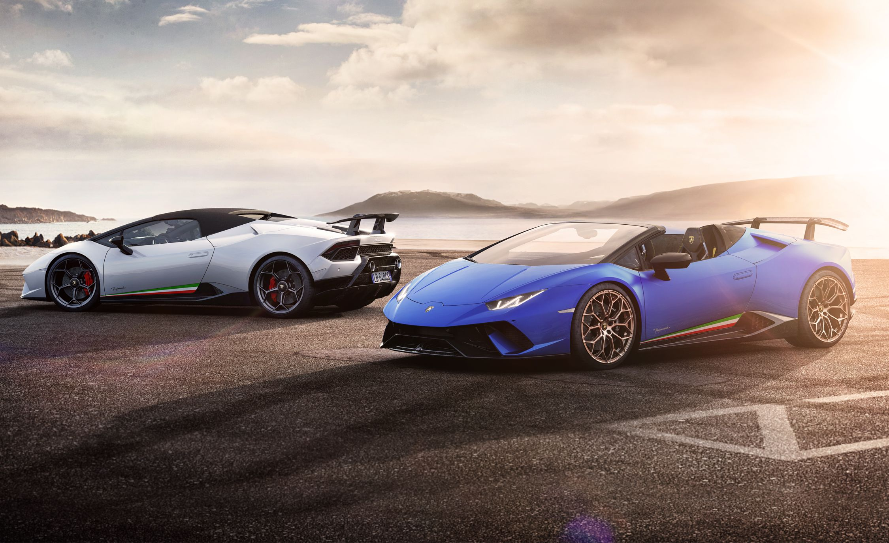
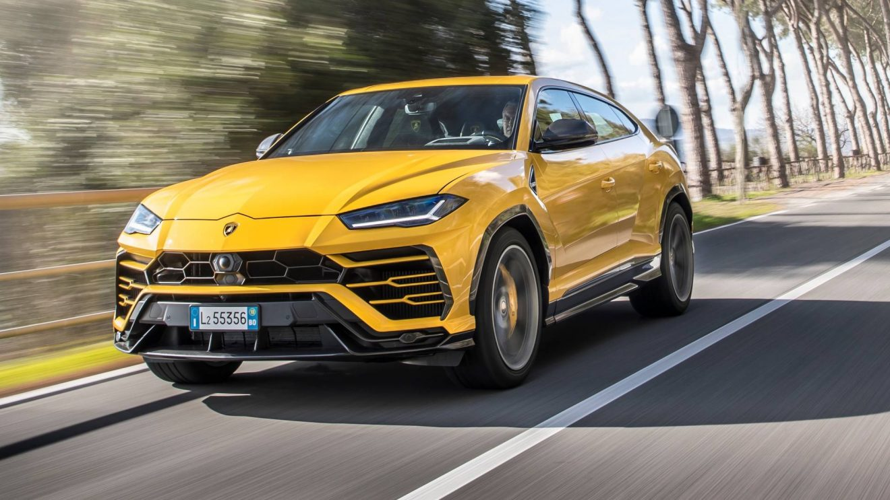

Launched on 28 February 2011 at the Geneva Motor Show, five months after its initial unveiling in Sant'Agata Bolognese, the vehicle, internally codenamed LB834, was designed to replace the then-decade-old Murciélago as the flagship model. The Aventador features a completely new 6.0 liter V12 engine producing 691 horsepower at all of the wheels. Soon after the Aventador's unveiling, Lamborghini announced that it had sold 12 cars, with deliveries starting in the second half of 2011. By March 2016, Lamborghini had built 5,000 Aventadors, in five years.
Huracan

The Lamborghini Huracán (Spanish for "hurricane") is a sports car manufactured by Italian automotive manufacturer Lamborghini replacing the previous V10 flagship, the Gallardo. The Huracán made its worldwide debut at the 2014 Geneva Auto Show, and was released in the market the second quarter of 2014. The LP 610-4 designation comes from the fact that this car has 610 metric horsepower and 4 wheel drive, while LP stands for "Longitudinale Posteriore", which refers to the longitudinal mid-rear engine position. The Huracán was named "The Supercar of the Year 2014" by automotive magazine Top Gear.
Urus

The Lamborghini Urus concept was unveiled at the 2012 Beijing Auto Show on 23 April 2012. Later, the SUV was also shown at Pebble Beach in 2012. Powered by a 5.2 L V10 engine of the Gallardo, the concept SUV had a maximum power output of 600 PS (592 hp; 441 kW) and was accompanied with an all-wheel drive system. The Urus was reported to have the lowest carbon emissions as compared to its competitors (i.e. the Porsche Cayenne, Bentley Bentayga and the Audi Q7). The Urus was conceived as a perfect daily driver unlike the other offerings from the brand. The sharp-lined exterior design of the SUV takes heavy influence from the company's V12 flagship, the Aventador. The production version of the SUV was revealed in 2017 with major changes done to the exterior and featuring a different powertrain than that of the concept.